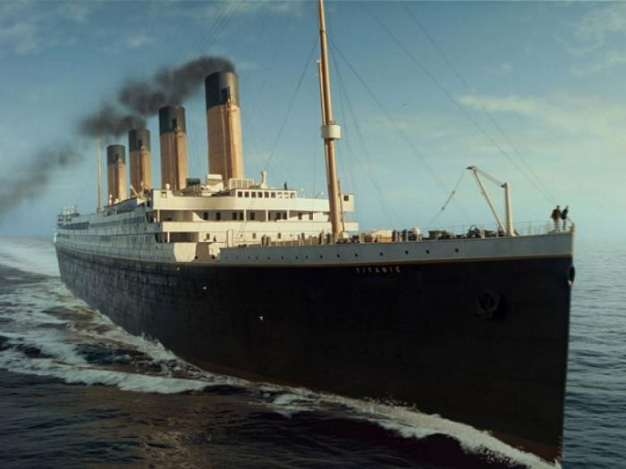

Titanic, è un film del 1997 diretto da James Cameron. La storia è narrata da Rose DeWitt Bukater (Gloria Stuart), un’anziana signora sopravvissuta al terribile naufragio del transatlantico RMS Titanic, avvenuto nell’aprile del 1912.
All’epoca Rose (Kate Winslet) è una diciassettenne britannica che si imbarca con la madre Ruth (Frances Fisher) e lo spocchioso fidanzato Cal Hockley (Bill Zane), che è costretta a sposare per sanare i debiti della sua famiglia.
Oppressa dal suo destino, Rose si arrampica sul parapetto, decisa a togliersi la vita. La ragazza, tuttavia, viene dissuasa dallo squattrinato Jack Dawson (Leonardo DiCaprio) e Cal, per ringraziare il giovane, lo invita ad un’opulenta cena.
Quella sera, l’uomo dona a Rose un formidabile gioiello appartenuto a Luigi XVI, chiamato ‘il Cuore dell’Oceano’. Ma la ragazza preferisce passare il suo tempo con Jack, piuttosto che sopportare la presenza del suo arrogante promesso sposo. Tra i due nasce ben presto un sincero e profondo sentimento, ma Cal si accorge della relazione clandestina e impone a Rose di non frequentare più Jack.
Nonostante la ragazza provi a sottostarsi al matrimonio organizzato da sua madre, i sentimenti che prova per Jack sono troppo forti e i due si dichiarano amore. Il giovane dipinge un erotico ritratto dell’amata e la coppia progetta di fuggire segretamente insieme, una volta sbarcati in America. Ma il destino non si mostrerà clemente con loro.
Nel corso della notte del 14 aprile, infatti, il transatlantico si schianta contro un iceberg e lo scafo è irrimediabilmente compromesso. Mentre sul ponte i passeggeri si affrettano a riempire le scialuppe, Cal sferra l’ultimo attacco al suo rivale ma Rose è pronta a tutto per aiutarlo, rinunciando alla salvezza.
I due innamorati ingaggiano una corsa contro il tempo ma il Titanic si spezza in due tronchi e Rose e Jack stanno per cadere nelle acque gelide dell’oceano…